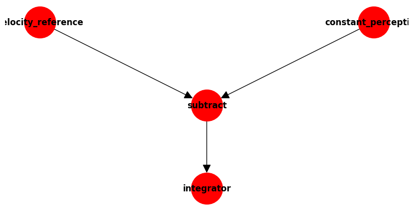

#node = PCTNode()
#node.summary()Nodes
A node is a single control unit representing a feedback control loop.
Overview
A node comprises four functions, reference, perceptual, comparator and output. Executing the node will run each of the functions in the order indicated above and return the output value.
The functions can actually be a collection of functions, each executed in the order they are added. This allows a chain of functions in case pre-processing is required, or post-processing in the case of the output.
ControlUnitIndices
def ControlUnitIndices(
args:VAR_POSITIONAL, kwds:VAR_KEYWORD
):
Enum where members are also (and must be) ints
PCTNode
def PCTNode(
reference:NoneType=None, perception:NoneType=None, comparator:NoneType=None, output:NoneType=None,
default:bool=True, name:str='pctnode', history:bool=False, build_links:bool=False, mode:int=0,
namespace:NoneType=None, pargs:VAR_KEYWORD
):
A single PCT controller.
PCTNodeData
def PCTNodeData(
name:str='pctnodedata'
):
Data collected for a PCTNode
Creating a Node
A node can be created simply.
node = PCTNode()
node.summary()pctnode PCTNode 12a9616b-8e6b-11f0-a6f7-5c879cf9f59b
----------------------------
REF: constant Constant | 0
PER: variable Variable | 0
COM: subtract Subtract | 0 | links constant variable
OUT: proportional Proportional | gain 1 | 0 | links subtract
----------------------------That creates a node with default functions. Those are, a constant of 1 for the reference, a variable, with initial value 0, for the perception and a proportional function for the output, with a gain of 10.
A node can also be created by providing a name, and setting the history to True. The latter means that the values of all the functions are recorded during execution, which is useful for plotting the data later, as can be seen below.
dynamic_module_import( 'pct.functions', 'Constant')reference = Constant(1)
namespace=reference.namespacenode = PCTNode(name="mypctnode", history=True, reference = reference, output=Proportional(10, namespace=namespace), namespace=namespace)
node.summary()mypctnode PCTNode 12b98ffb-8e6b-11f0-944c-5c879cf9f59b
----------------------------
REF: constant Constant | 1
PER: variable Variable | 0
COM: subtract Subtract | 0 | links constant variable
OUT: proportional Proportional | gain 10 | 0 | links subtract
----------------------------Another way of creating a node is by first declaring the functions you want and passing them into the constructor.
UniqueNamer.getInstance().clear()
r = Variable(0, name="velocity_reference")
p = Constant(10, name="constant_perception")
o = Integration(10, 100, name="integrator")
integratingnode = PCTNode(reference=r, perception=p, output=o, name="integratingnode", history=True)Yet another way to create a node is from a text configuration.
config_node = PCTNode.from_config({ 'name': 'mypctnode',
'refcoll': {'0': {'type': 'Proportional', 'name': 'proportional', 'value': 0, 'links': {}, 'gain': 10}},
'percoll': {'0': {'type': 'Variable', 'name': 'velocity', 'value': 0.2, 'links': {}}},
'comcoll': {'0': {'type': 'Subtract', 'name': 'subtract', 'value': 1, 'links': {0: 'constant', 1: 'velocity'}}},
'outcoll': {'0': {'type': 'Proportional', 'name': 'proportional', 'value': 10, 'links': {0: 'subtract'}, 'gain': 10}}})
# config_node = PCTNode.from_config({ 'name': 'mypctnode1',
# 'refcoll': {'0': {'type': 'Proportional', 'name': 'proportional', 'value': 0, 'links': {}, 'gain': 10}},
# 'percoll': {'0': {'type': 'Variable', 'name': 'velocity', 'value': 0.2, 'links': {}}},
# 'comcoll': {'0': {'type': 'Subtract', 'name': 'subtract', 'value': 1, 'links': {0: 'constant', 1: 'velocity'}}},
# 'outcoll': {'0': {'type': 'Proportional', 'name': 'proportional', 'value': 10, 'links': {0: 'subtract'}, 'gain': 10}}}, namespace=namespace)Viewing Nodes
The details of a node can be viewed in a number of ways, which is useful for checking the configuration. The summary method prints to the screen. The get_config method returns a string in a JSON format.
integratingnode.summary()integratingnode PCTNode 12cb273f-8e6b-11f0-9f2d-5c879cf9f59b
----------------------------
REF: velocity_reference Variable | 0
PER: constant_perception Constant | 10
COM: subtract Subtract | 0 | links velocity_reference constant_perception
OUT: integrator Integration | gain 10 slow 100 | 0 | links subtract
----------------------------#print(integratingnode.get_config())
assert integratingnode.get_config() == {'type': 'PCTNode', 'name': 'integratingnode', 'refcoll': {'0': {'type': 'Variable', 'name': 'velocity_reference', 'value': 0, 'links': {}}}, 'percoll': {'0': {'type': 'Constant', 'name': 'constant_perception', 'value': 10, 'links': {}}}, 'comcoll': {'0': {'type': 'Subtract', 'name': 'subtract', 'value': 0, 'links': {0: 'velocity_reference', 1: 'constant_perception'}}}, 'outcoll': {'0': {'type': 'Integration', 'name': 'integrator', 'value': 0, 'links': {0: 'subtract'}, 'gain': 10, 'slow': 100}}}
integratingnode.get_config(){'type': 'PCTNode',
'name': 'integratingnode',
'refcoll': {'0': {'type': 'Variable',
'name': 'velocity_reference',
'value': 0,
'links': {}}},
'percoll': {'0': {'type': 'Constant',
'name': 'constant_perception',
'value': 10,
'links': {}}},
'comcoll': {'0': {'type': 'Subtract',
'name': 'subtract',
'value': 0,
'links': {0: 'velocity_reference', 1: 'constant_perception'}}},
'outcoll': {'0': {'type': 'Integration',
'name': 'integrator',
'value': 0,
'links': {0: 'subtract'},
'gain': 10,
'slow': 100}}}A node can also be viewed graphically as a network of connected nodes.
import osif os.name=='nt':
integratingnode.draw(node_size=2000, figsize=(8,4))
Running a Node
For the purposes of this example we first create a function which is a very basic model of the physical environment. It defines how the world behaves when we pass it the output of the control system.
def velocity_model(velocity, force , mass):
velocity = velocity + force / mass
return velocity
mass = 50
force = 0In the following cell we start with a velocity of zero. The node is run once (second line), the output of which is the force to apply in the world velocity_model. That returns the updated velocity which we pass back into the node to be used in the next iteration of the loop.
velocity=0
force = node()
velocity = velocity_model(velocity, force, mass)
node.set_perception_value(velocity)
print(force)
assert force == 1010The node can be run in a loop as shown below. With verbose set to True the output of each loop will be printed to the screen.
pctnode = PCTNode(history=True)
pctnode.set_function_name("perception", "velocity")
pctnode.set_function_name("reference", "reference")
for i in range(40):
print(i, end=" ")
force = pctnode(verbose=True)
vel = velocity_model(pctnode.get_perception_value(), force, mass)
pctnode.set_perception_value(vel)0 0.000 0.000 0.000 0.000
1 0.000 0.000 0.000 0.000
2 0.000 0.000 0.000 0.000
3 0.000 0.000 0.000 0.000
4 0.000 0.000 0.000 0.000
5 0.000 0.000 0.000 0.000
6 0.000 0.000 0.000 0.000
7 0.000 0.000 0.000 0.000
8 0.000 0.000 0.000 0.000
9 0.000 0.000 0.000 0.000
10 0.000 0.000 0.000 0.000
11 0.000 0.000 0.000 0.000
12 0.000 0.000 0.000 0.000
13 0.000 0.000 0.000 0.000
14 0.000 0.000 0.000 0.000
15 0.000 0.000 0.000 0.000
16 0.000 0.000 0.000 0.000
17 0.000 0.000 0.000 0.000
18 0.000 0.000 0.000 0.000
19 0.000 0.000 0.000 0.000
20 0.000 0.000 0.000 0.000
21 0.000 0.000 0.000 0.000
22 0.000 0.000 0.000 0.000
23 0.000 0.000 0.000 0.000
24 0.000 0.000 0.000 0.000
25 0.000 0.000 0.000 0.000
26 0.000 0.000 0.000 0.000
27 0.000 0.000 0.000 0.000
28 0.000 0.000 0.000 0.000
29 0.000 0.000 0.000 0.000
30 0.000 0.000 0.000 0.000
31 0.000 0.000 0.000 0.000
32 0.000 0.000 0.000 0.000
33 0.000 0.000 0.000 0.000
34 0.000 0.000 0.000 0.000
35 0.000 0.000 0.000 0.000
36 0.000 0.000 0.000 0.000
37 0.000 0.000 0.000 0.000
38 0.000 0.000 0.000 0.000
39 0.000 0.000 0.000 0.000 Save and Load
Save a node to file.
import jsonintegratingnode.save("inode.json")Create a node from file.
nnode = PCTNode.load("inode.json")
nnode.summary()
print(nnode.get_config())integratingnode PCTNode 13af3801-8e6b-11f0-ac4b-5c879cf9f59b
----------------------------
REF: velocity_reference Variable | 0
PER: constant_perception Constant | 10
COM: subtract Subtract | 0 | links velocity_reference constant_perception
OUT: integrator Integration | gain 10 slow 100 | 0 | links subtract
----------------------------
{'type': 'PCTNode', 'name': 'integratingnode', 'refcoll': {'0': {'type': 'Variable', 'name': 'velocity_reference', 'value': 0, 'links': {}}}, 'percoll': {'0': {'type': 'Constant', 'name': 'constant_perception', 'value': 10, 'links': {}}}, 'comcoll': {'0': {'type': 'Subtract', 'name': 'subtract', 'value': 0, 'links': {0: 'velocity_reference', 1: 'constant_perception'}}}, 'outcoll': {'0': {'type': 'Integration', 'name': 'integrator', 'value': 0, 'links': {0: 'subtract'}, 'gain': 10, 'slow': 100}}}print(nnode.get_summary())0.000 10.000 0.000 0.000Plotting the Data
As the history of the variable pctnode was set to True the data is available for analysis. It can be plotted with python libraries such as matplotlib or plotly. Here is an example with the latter.
The graph shows the changing perception values as it is controlled to match the reference value.
import plotly.graph_objects as go
fig = go.Figure(layout_title_text="Velocity Goal")
fig.add_trace(go.Scatter(y=pctnode.history.data['refcoll']['reference'], name="ref"))
fig.add_trace(go.Scatter(y=pctnode.history.data['percoll']['velocity'], name="perc"))This following code is only for the purposes of displaying image of the graph generated by the above code.
from IPython.display import ImageImage(url='http://www.perceptualrobots.com/wp-content/uploads/2020/08/pct_node_plot.png')
Counting Links in a Node
The get_num_links method allows you to count the total number of links in a node. This is useful for analyzing the complexity of a node or when calculating model statistics.
# Create a node with default functions and build links
test_node = PCTNode(build_links=True)
# Get the number of links in the node
num_links = test_node.get_num_links()
print(f"Number of links in the default node: {num_links}")
# Create a more complex node
complex_node = PCTNode()
complex_node.build_links() # This connects the internal functions
# Add some additional links
additional_function = Variable(2, name="additional_var")
complex_node.outputCollection[0].add_link(additional_function)
# Now count the links again
num_links_complex = complex_node.get_num_links()
print(f"Number of links in the complex node: {num_links_complex}")
# You can use this to analyze the complexity of your models
print(f"The complex node has {num_links_complex - num_links} more links than the default node")Number of links in the default node: 3
Number of links in the complex node: 4
The complex node has 1 more links than the default node